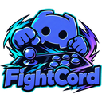
Fightcord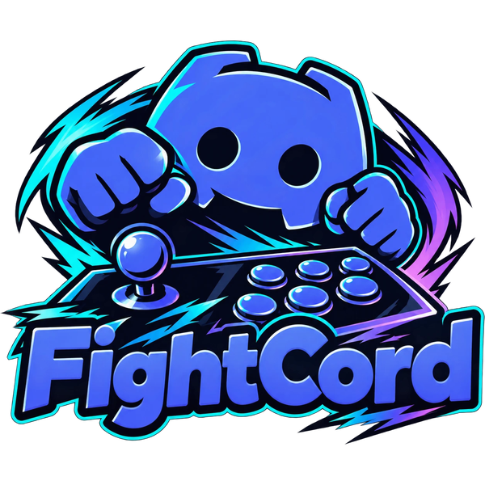
Plus a stack of tools for competitive players: scout cards, stats, training goals, find a match and a streamer mode. One installer, everything runs inside the Fightcade app on your PC.
Fan-made. Not made by, affiliated with or endorsed by Fightcade or Discord.
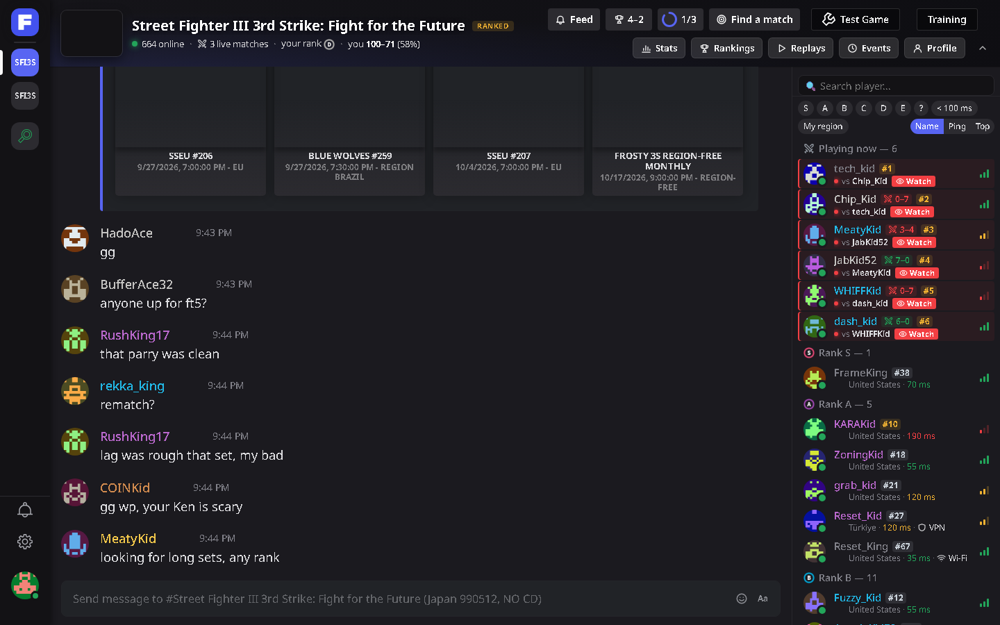
A Discord-style theme with a channel rail, member list grouped by rank, hover cards and a profile popout. Dark, AMOLED, Classic grey or FightCord Neon, any accent colour, or your own colours.
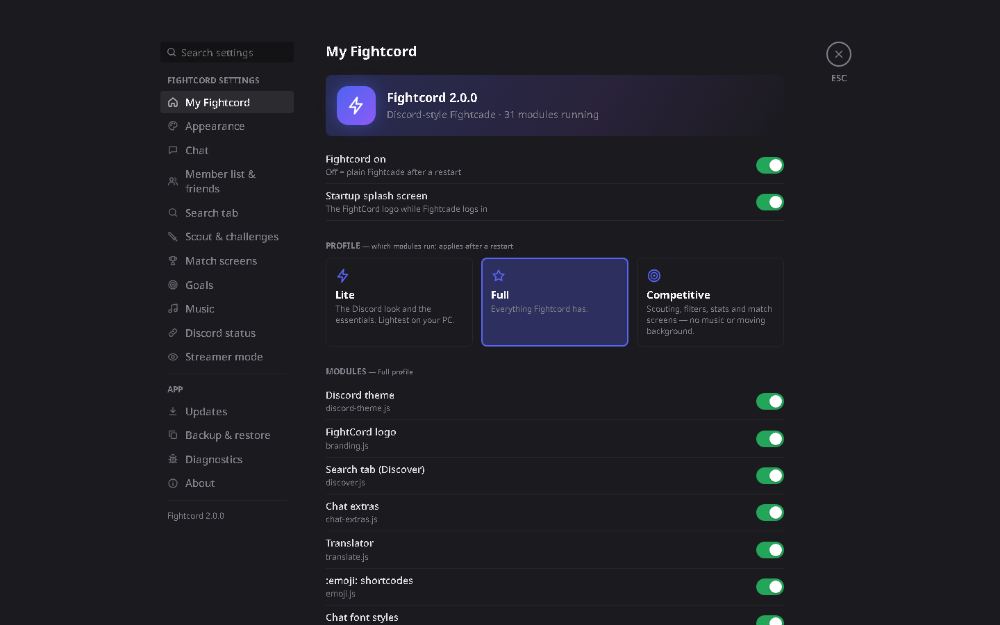
The search tab becomes a Discover page: categories, your games, live matches to watch and instant search.
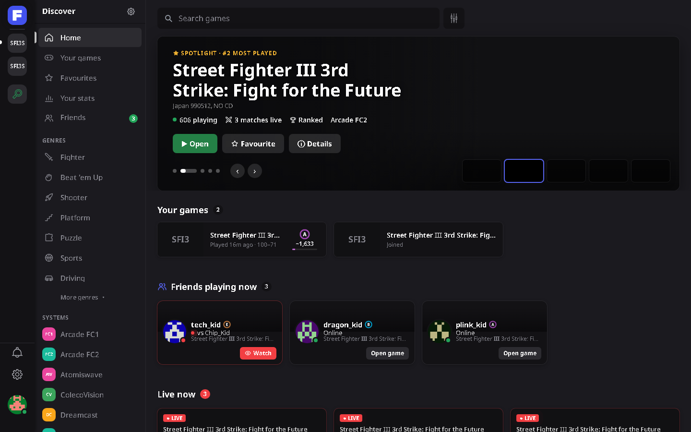
One button lists who is free right now near your rank, on a good ping, new to you or close in your head-to-head. Click Challenge and Fightcade asks for the FT as usual.
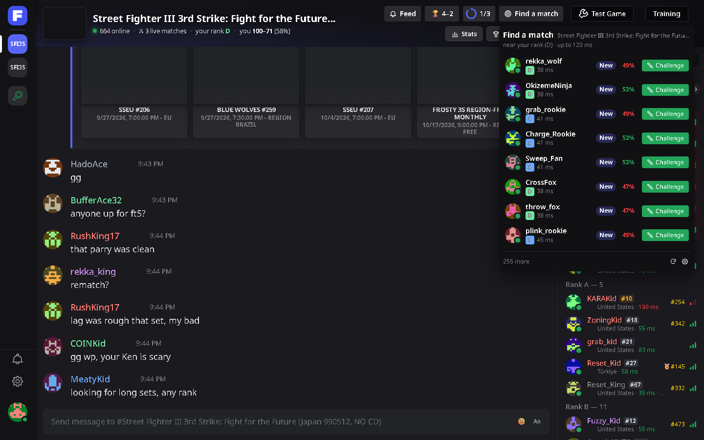
The moment someone challenges you: their rank, ELO, your odds, your head-to-head, and whether they tend to leave ranked sets unfinished.
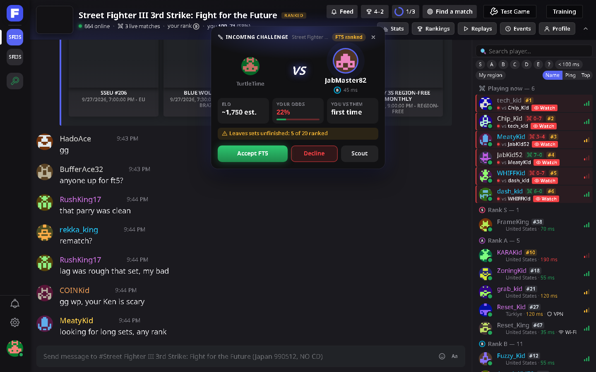
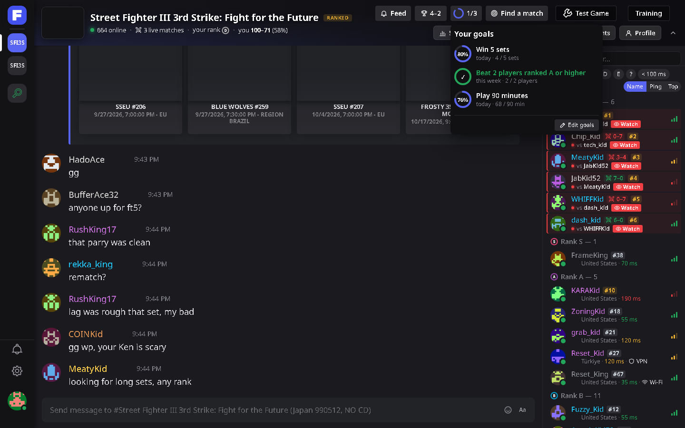
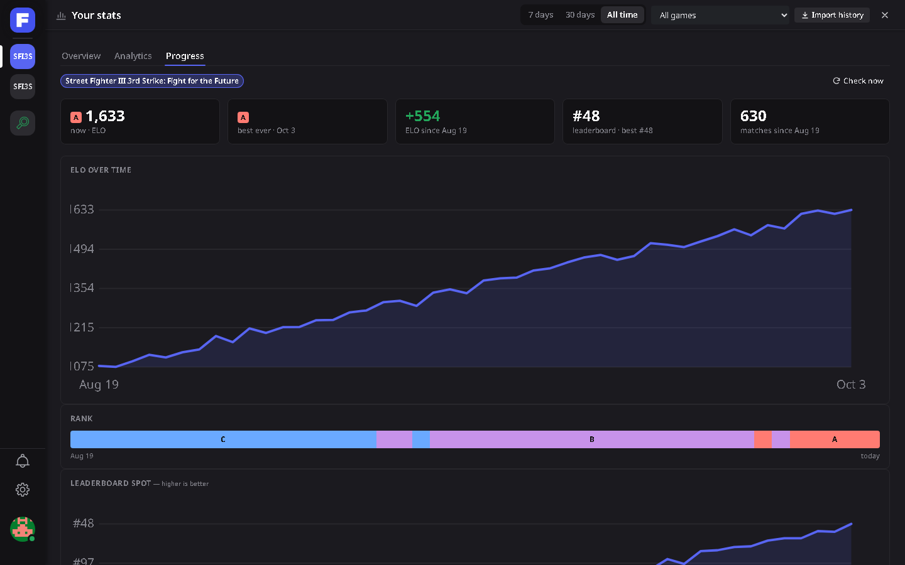
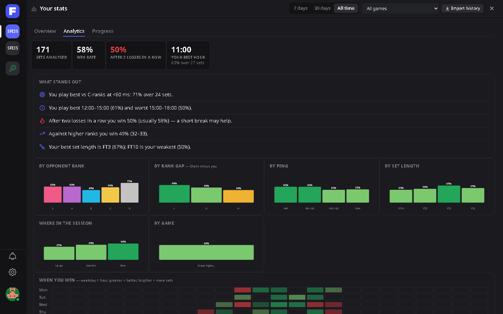
Goals, stats and history. Training goals tracked live, tonight’s record, a rank and ELO chart per game, head-to-heads, and analytics by opponent rank, ping and hour of day.
Ctrl+Shift+H blurs other players’ names, avatars and chat. Challenges wait in a queue, one card at a time and none mid-match.
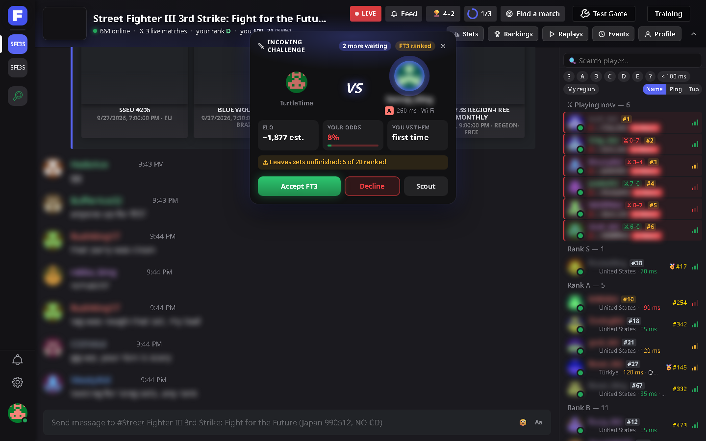
A scoreboard to add in OBS as a Browser Source: you vs your opponent, ranks, the score and tonight’s record. Served from your own PC only.
Friends with online and match alerts, player notes, a lobby feed of upsets and streaks, tournament reminders, Discord status, chat translation, :emoji: shortcodes and your own lobby music.
In English, Português (Brasil) and Español.
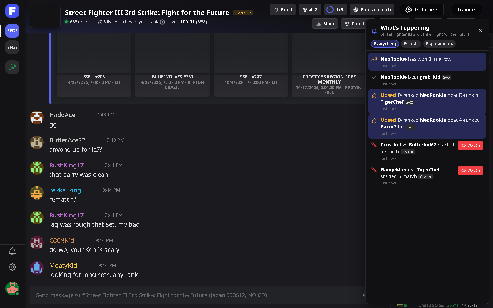
Fightcord only talks to Fightcade’s own API, GitHub for updates, and the services you switch on (chat translation, Discord status). Your settings and history stay on your PC.
It only changes what you see and click in the Fightcade app. It never touches the emulator, game memory, inputs or netcode, and never plays, challenges, accepts or declines anything on its own.
New versions install from GitHub, checked once a day and verified by checksum. Uninstall any time: your previous setup can be put back.
Close Fightcade, run FightcordSetup.exe and click Install. Open Fightcade and a short welcome screen walks you through the rest.
The installer isn’t code-signed (certificates cost money), so SmartScreen warns the first time: More info → Run anyway.
Some antivirus apps (Malwarebytes, for example) flag new unsigned installers by AI guesswork, such as “MachineLearning/Anomalous”. That’s not a known threat. Everything is open source, so you can read the code or build the installer yourself; if you trust it, restore it from quarantine.
Hold Shift while Fightcade starts to open it without Fightcord, then check Settings → Diagnostics or open an issue on GitHub.
Fightcord replaces it. The installer moves Cerberus to a backup folder and brings your settings, match history and sounds along.